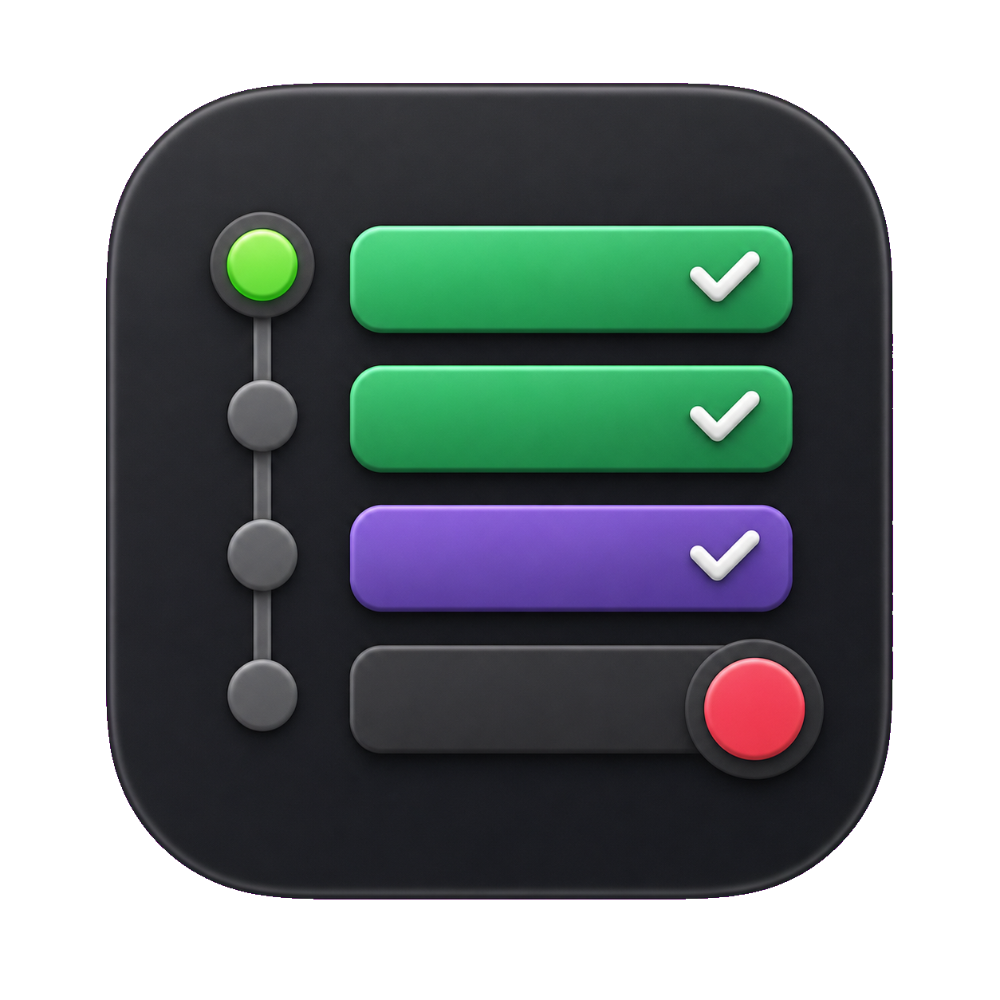
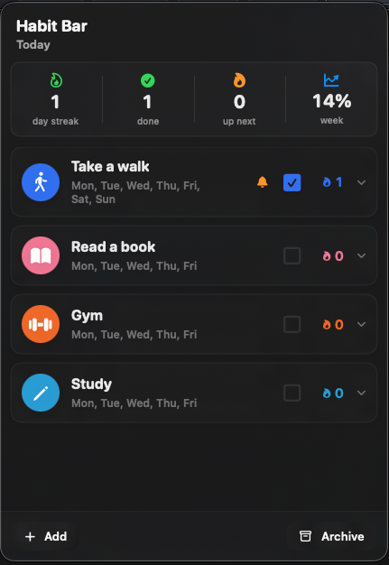
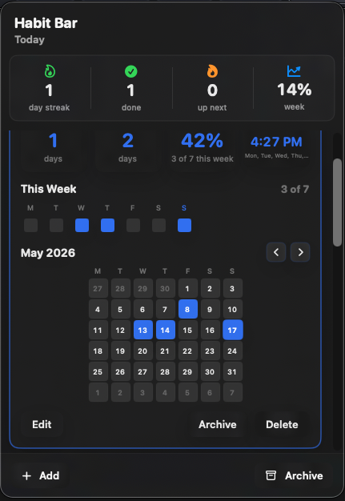

Today-first logging
Toggle completion from the popover with compact, scannable habit rows.

Habit BarNative macOS menu bar tracker
A compact habit tracker built for the macOS menu bar.


Why it exists
Habit Bar keeps daily check-ins close to where macOS users already work: the menu bar. Open the popover, mark today done, inspect recent history, and get back to work.
Toggle completion from the popover with compact, scannable habit rows.
Review streaks, weekly completion, and a month grid without leaving the menu bar.
Create habits with icons, accent colors, tracking days, and optional reminders.
Edit, archive, restore, or delete habits inline instead of managing a separate dashboard.
Daily flow
Habit Bar is intentionally small: no accounts, no social feed, no analytics wall. The product surface is the menu bar popover.
Focused by design
Requires macOS 14 or newer.